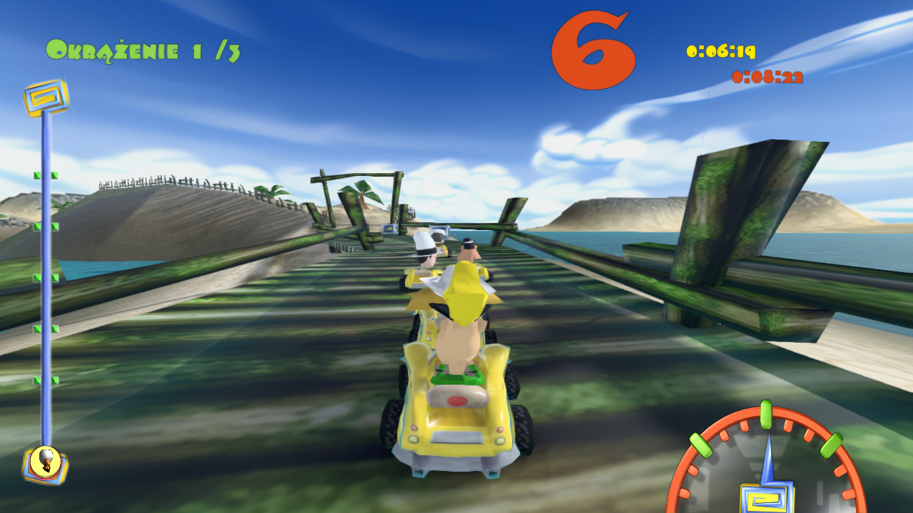

Windows
Your system16.4 MBWindows 10 / 11 · x64 · ZIP
Download for WindowsVersion 0.1.17
ToonCar on today's computers. Familiar characters and tracks, classic or enhanced graphics. Your choice.

Requires your own copy of the Polish ToonCar (2001). Got Toon Quad (the Polish Odjazdowy Rajd) too? Add its tracks and Santa.
Windows 10 / 11 · x64 · ZIP
Download for Windowsx86_64 · TAR.GZ · glibc 2.39+
Download for LinuxAndroid 8.0+ · ARM64 · APK
Download for AndroidToonCar.exe on Windows or ToonCar on Linux.ToonCar.exe and RData. Only the Polish 2001 edition is supported.SETUP.cab or an .iso image.texture-pack folder should sit next to ToonCar or ToonCar.exe.%LOCALAPPDATA%\ToonCarRemaster (Windows) or ~/.local/share/tooncar-remaster (Linux, also $XDG_DATA_HOME).